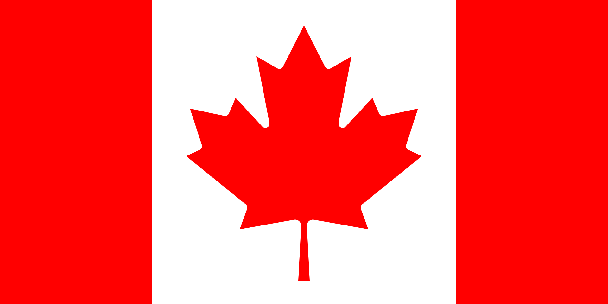

 Már a 20. század első felében felmerült egy új zászló bevezetésének terve, de a (politikai) szándék csak az 1960-as évekre érett meg. Ekkor azonban szabályos vita alakult ki: a miniszterelnök, Lester Bowles Pearson a változtatás mellé állt, az ellenzék vezére, a korábbi miniszterelnök, John Diefenbaker azonban ellene kampányolt. Többpárti parlamenti bizottság alakult, amely 1964. október 29-én végül egyhangúlag a történész George Stanley ezredes által tervezett zászlót választotta (azon a változaton még 13 csúcsa volt a levélnek). Az ezredes egyébként a Kanadai Királyi Katonai Főiskola zászlóját vette alapul, mely három egyenlő szélességű vörös-ezüst-vörös függőleges sávból állt, középen az iskola címerével.